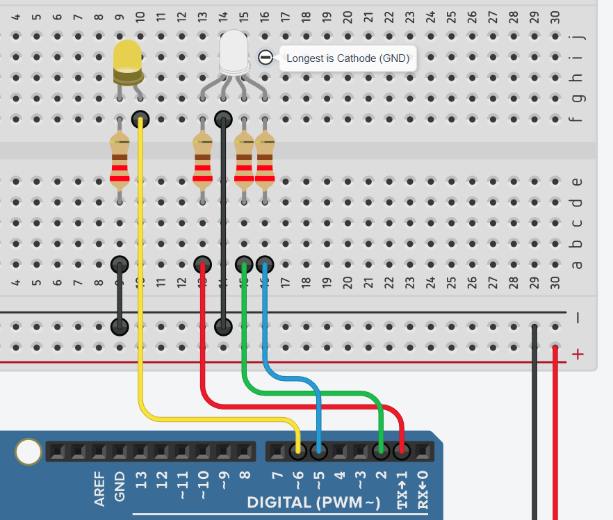
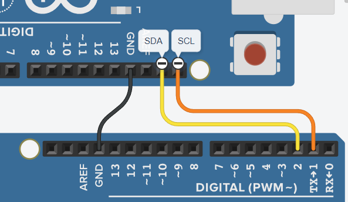
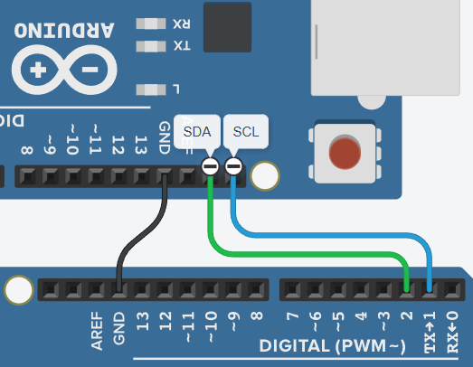

McMaster Smart Classroom
Welcome, Future Engineers! Your mission is to bring this Smart
Classroom to life. Each team has a critical station to build. This handbook is your guide, providing mission
briefings and a reference for the SmartDevice library you'll use.
Getting Started: The Universal Template
Your journey begins with the UniversalDeviceTemplate.ino file. This
template handles all complex networking behind the scenes. Your job is to "fill in the blanks" with your
station's specific code.
Understanding Your Template
Open the template in your Arduino IDE:
File > Examples > SmartDevice > UniversalDeviceTemplate.
You'll work within 5 distinct
sections:
-
Library Inclusions:
At the top, you'll see
#include <SmartDevice.h>. Add any other libraries your station needs here, like<Servo.h>or<DHT.h>.// 1. LIBRARY INCLUSIONS #include <SmartDevice.h> #include <Servo.h> // <-- EXAMPLE! -
Variable Definitions:
Define global variables your program needs, like sensor pins or state flags.
// 2. VARIABLE DEFINITIONS const int sensorPin = PIN_D1; // Example for a sensor pin bool isDeviceOn = false; // Example to track state -
Configuration:
You must change these values to match your station's assignment. Define your device name and any communication topics it needs.
// 3. CONFIGURATION const char* DEVICE_NAME = "My_Station_Device"; // <-- CHANGE THIS! e.g., "Sarah_Door_Lock" const char* BASE_TOPIC = "classroom/some_device"; // <-- CHANGE for your station -
Object Declarations:
Declare objects from libraries here. The
SmartDevice myDevice;object is already created for you. Add others as needed.// 4. OBJECT DECLARATIONS SmartDevice myDevice; Servo myServo; // Example for a servo motor -
Device Functions:
This is where you'll write your station's logic in three key functions:
-
setupDevice(): Runs once at startup. Use it to initialize hardware (e.g., set pin modes, start sensors).void setupDevice() { pinMode(PIN_D7, OUTPUT); // Example: Set a pin as an output myDevice.subscribeTo(BASE_TOPIC); // Example: Listen for commands } -
readSensor(): Runs repeatedly. Use it for continuous tasks like reading sensors and publishing their data.void readSensor() { int sensorValue = digitalRead(sensorPin); myDevice.publishTo(BASE_TOPIC, String(sensorValue)); } -
triggerActuator(String topic, String command): Runs only when a command is received from the hub. Use it to control actuators like lights or motors.void triggerActuator(String topic, String command) { if (command == "true") { digitalWrite(PIN_D7, HIGH); // Example: Turn something ON } }
-
The "System Engine"
Below the sections you modify is the "System Engine" code. It handles all the background work of connecting to Wi-Fi and the hub. Do not modify this section. It's the foundation of your project!
Network Information
You will need this for your configuration. It should also be on the main whiteboard.
- Wi-Fi Network (SSID):
McMasterIoT-Camp - Wi-Fi Password:
Roomba2025 - Hub IP Address:
192.168.0.147(confirm with instructor)
Instructor Briefing
Welcome, Future Engineers! Your mission is to build a living, intelligent classroom system, piece by piece.
Integrated System
Specialized Stations
Limitless Innovation
Your Core Toolkit
You'll harness the power of a tiny computer and a versatile programming environment.
ESP8266
The compact, Wi-Fi-enabled microcontroller that acts as the brain for your IoT device.
Arduino IDE
Your integrated development environment for writing, compiling, and uploading C++ code to the ESP8266.
Your Workflow: The Universal Template
Every station begins with the same
UniversalDeviceTemplate.ino. We've pre-configured the complex networking, so you can
focus on your unique hardware logic.
Configure Device Identity
In the "Configuration Section" of your template, you must update the
DEVICE_NAME and topic variables with the values for your station. This tells the network
who your device is.
const char* DEVICE_NAME = "My_Station_Device"; // <-- CHANGE!const char* BASE_TOPIC = "classroom/your_topic"; // <-- CHANGE!
Write Your Logic in Core Functions
Your specific hardware logic goes into three dedicated functions. Understanding when each runs is crucial:
setupDevice()
Executes ONCE at startup. Ideal for pin configuration
(pinMode), sensor initialization, and attaching components.
readSensor()
Runs REPEATEDLY. Use for continuous sensor readings and
publishing data (myDevice.publishTo()).
triggerActuator
(String topic, String command)
(String topic, String command)
Executes ON-DEMAND when your device receives a command. Perfect for controlling actuators.
The "System Engine": Hands-Off Zone!
Below your code lies the "System Engine". This handles all Wi-Fi and MQTT connections. DO NOT EDIT THIS SECTION. Changes here could prevent your device from connecting.
Going Live & Debugging
Even experts hit roadblocks. This guide will help you upload your code and tackle common issues.
4-Step Code Upload
- Select Board: In Arduino IDE, go to
Tools > Board > ESP8266 Boardsand chooseGeneric ESP8266 Module. - Select Port: Go to
Tools > Portand select the correct serial port. Unplug and replug to identify it if needed. - Enter Flash Mode: If uploads fail, hold the "FLASH" or "BOOT" button, plug in the USB, then release the button.
- Upload & Monitor: Click "Upload" (→). Once done, open the "Serial Monitor" (magnifying glass)
and set baud rate to
115200to see debug messages.
Common Bug Hotspots
Know these common issues!
Proportion of common troubleshooting areas.
Debugging with Serial.println()
Your best debugging tool! Use Serial.println("Your message"); to
print values and see what your device is doing in the Serial Monitor. This is invaluable for finding
problems!
One Team, Six Missions
Each station plays a vital role. Together, you form the complete Smart Classroom system!
HVAC
Sensors
Lighting
Security
Curtain
Panel
Station 1: HVAC & Kettle Control
Your Mission: Climate & Convenience Commanders
Your team will give the hub remote control over a fan (HVAC) and a kettle using relay modules. Relays act like smart switches, letting your ESP8266 safely turn high-power devices on and off.
Real-World Application:
Think of smart thermostats or smart plugs that let you control any appliance from your phone. You're building the core intelligence for such systems.
Hardware Kit
- 1x ESP8266 Board & Breadboard
- 1x Custom HVAC Power Plug (Relay)
- 1x Custom Kettle Power Plug (Relay)
Wiring Guide
- HVAC Relay: Connect its Signal wire to pin
PIN_D7and Ground to aGNDpin. - Kettle Relay: Connect its Signal wire to pin
PIN_D6and Ground to aGNDpin.
Coding Mission: Step-by-Step
Your station reacts to commands. You'll primarily code in setupDevice() and
triggerActuator().
- Variable Definitions & Configuration: Define your relay pins and topic names.
// 2. VARIABLE DEFINITIONS const int KETTLE_PIN = PIN_D6; const int HVAC_PIN = PIN_D7; // 3. CONFIGURATION const char* DEVICE_NAME = "YourName_Appliances"; const char* KETTLE_TOPIC = "classroom/kettle"; const char* HVAC_TOPIC = "classroom/hvac"; setupDevice(): Configure relay pins as outputs, ensure they start OFF, and subscribe to their topics.void setupDevice() { pinMode(HVAC_PIN, OUTPUT); pinMode(KETTLE_PIN, OUTPUT); digitalWrite(HVAC_PIN, LOW); // Start OFF digitalWrite(KETTLE_PIN, LOW); // Start OFF myDevice.subscribeTo(HVAC_TOPIC); myDevice.subscribeTo(KETTLE_TOPIC); }triggerActuator(String topic, String command): Control the correct relay based on the topic and command.void triggerActuator(String topic, String command) { int pinToControl = -1; if (topic == HVAC_TOPIC) { pinToControl = HVAC_PIN; } else if (topic == KETTLE_TOPIC) { pinToControl = KETTLE_PIN; } if (pinToControl != -1) { if (command == "true") { digitalWrite(pinToControl, HIGH); // Turn ON } else { digitalWrite(pinToControl, LOW); // Turn OFF } } }
Success Criteria
Your mission succeeds when you can remotely control the fan and kettle from the central dashboard, and their status updates correctly.
Station 2: Environmental & Security Sensors
Your Mission: The Environmental Observers
Your team will monitor the classroom's temperature, motion, and window status (open/closed). This data allows for automated climate control and security alerts.
Real-World Application:
Smart homes use these sensors to adjust heating, turn on lights with motion, or send alerts if a window is left open. You're building the eyes and ears of such a system.
Hardware Kit
- 1x ESP8266 Board & Breadboard
- 1x DHT11 Temperature & Humidity Sensor
- 1x PIR Motion Sensor
- 1x Magnetic Reed Switch (Window Sensor)
Wiring Guide
- DHT11 Sensor: Data to
PIN_D2, VCC to3V3, GND toGND. - PIR Motion Sensor: OUT to
PIN_D5, VCC to3V3, GND toGND. - Reed Switch (Window): One wire to
PIN_D6, the other toGND.
Coding Mission: Step-by-Step
Your station only sends data. You'll primarily code in setupDevice() and
readSensor().
- Libraries, Variables, Config & Objects: Set up your libraries, pins, topics, and DHT object.
// 1. LIBRARY INCLUSIONS #include <SmartDevice.h> #include <DHT.h> // 2. VARIABLE DEFINITIONS const int TEMP_PIN = PIN_D2; const int MOTION_PIN = PIN_D5; const int WINDOW_PIN = PIN_D6; // 3. CONFIGURATION const char* DEVICE_NAME = "YourName_EnviroSense"; const char* TEMP_TOPIC = "classroom/thermostat"; const char* MOTION_TOPIC = "classroom/motion"; const char* WINDOW_TOPIC = "classroom/window"; // 4. OBJECT DECLARATIONS SmartDevice myDevice; DHT dht(TEMP_PIN, DHT11); setupDevice(): Initialize the DHT sensor and configure sensor pins as inputs.void setupDevice() { dht.begin(); pinMode(MOTION_PIN, INPUT); pinMode(WINDOW_PIN, INPUT_PULLUP); // Use internal pull-up }readSensor(): Read all sensors and publish their data to the correct topics.void readSensor() { float temperature = dht.readTemperature(); bool motionDetected = digitalRead(MOTION_PIN); bool windowOpen = !digitalRead(WINDOW_PIN); // Inverted due to PULLUP if (!isnan(temperature)) { myDevice.publishTo(TEMP_TOPIC, String(temperature, 1)); } myDevice.publishTo(MOTION_TOPIC, motionDetected ? "true" : "false"); myDevice.publishTo(WINDOW_TOPIC, windowOpen ? "true" : "false"); }triggerActuator(): This function can be left empty.void triggerActuator(String topic, String command) { // No actuators for this station. }
Success Criteria
Your mission succeeds when the dashboard correctly displays temperature, motion, and window status in real-time.
Station 3: Smart Lighting & Status Indicator
Your Mission: Illumination & Information Innovators
Your team will control the classroom's main lighting: a multi-color NeoPixel LED strip and a simple dimmable bulb. As an additional challenge, you will also control the 3-color Tower Light from the security station, using it as a visual indicator for the classroom's lock status.
Hardware Kit
- 1x ESP8266 Board & Breadboard
- 1x WS2812B NeoPixel LED Strip
- 1x Standard 5mm LED & 220 Ohm Resistor
- 1x 3-Color Industrial Tower Light
Wiring Guide
- NeoPixel Strip: Data In to
PIN_D5, 5V to5V, GND toGND. - Standard LED: Long leg (anode) to a 220 Ohm resistor, resistor to
PIN_D6. Short leg (cathode) toGND. - Tower Light: Connect the Red, White, and Blue
signal wires to pins
PIN_D0,PIN_D1, andPIN_D4respectively. Connect its Common wire toGND.
Coding Mission: Step-by-Step
Your station now listens for both lighting commands and lock status commands to control all the lights.
- Libraries, Variables, Config & Objects: Add new variables for the tower light pins and the lock
status topic.
// 1. LIBRARY INCLUSIONS #include <SmartDevice.h> #include <Adafruit_NeoPixel.h> // 2. VARIABLE DEFINITIONS const int STRIP_PIN = PIN_D5; const int NUM_LEDS = 6; const int BULB_PIN = PIN_D6; const int TOWER_RED_PIN = PIN_D0; const int TOWER_WHITE_PIN = PIN_D1; const int TOWER_BLUE_PIN = PIN_D4; // 3. CONFIGURATION const char* DEVICE_NAME = "YourName_Lighting"; const char* STRIP_TOPIC = "classroom/lights"; const char* BULB_TOPIC = "classroom/light"; const char* LOCK_STATUS_TOPIC = "entrance/lock"; // Listen for lock status // 4. OBJECT DECLARATIONS SmartDevice myDevice; Adafruit_NeoPixel strip(NUM_LEDS, STRIP_PIN, NEO_GRB + NEO_KHZ800); setupDevice(): Initialize all light pins and subscribe to the new lock topic.void setupDevice() { strip.begin(); strip.show(); pinMode(BULB_PIN, OUTPUT); digitalWrite(BULB_PIN, LOW); pinMode(TOWER_RED_PIN, OUTPUT); pinMode(TOWER_WHITE_PIN, OUTPUT); pinMode(TOWER_BLUE_PIN, OUTPUT); myDevice.subscribeTo(STRIP_TOPIC); myDevice.subscribeTo(BULB_TOPIC); myDevice.subscribeTo(LOCK_STATUS_TOPIC); }triggerActuator(String topic, String command): Add logic to handle the new topic and control the tower light.void triggerActuator(String topic, String command) { if (topic == STRIP_TOPIC || topic == BULB_TOPIC) { SmartHome::Light lightCommand = SmartDevice::commandToLight(command); if (!lightCommand.isOn) { strip.fill(0); strip.show(); digitalWrite(BULB_PIN, LOW); } else { if (topic == STRIP_TOPIC) { strip.fill(SmartDevice::getRGB(lightCommand)); strip.show(); } else if (topic == BULB_TOPIC) { analogWrite(BULB_PIN, SmartDevice::getBrightnessValue(lightCommand)); } } } else if (topic == LOCK_STATUS_TOPIC) { bool isLocked = (command == "true"); digitalWrite(TOWER_RED_PIN, isLocked); digitalWrite(TOWER_BLUE_PIN, !isLocked); digitalWrite(TOWER_WHITE_PIN, LOW); } }
Success Criteria
Your mission succeeds when you can control all lights from the dashboard, AND the tower light correctly shows red for "locked" and blue for "unlocked" based on commands from Station 4.
Station 4: Door Security (I2C Architecture)
Your Mission: The System Architects
Your team's ESP8266 will act as a high-level manager. It will communicate with a dedicated I2C Door Controller (a pre-programmed Arduino) that handles all the low-level hardware. Your job is to write the code for the ESP8266 to send and receive simple commands over I2C, bridging the local hardware with the cloud.
Real-World Application:
This is a professional design pattern! One microcontroller handles networking (the ESP8266) while another handles real-time hardware control (the Door Controller). This separation of concerns makes systems more reliable and easier to debug.
Hardware Kit
- 1x ESP8266 Board & Breadboard
- 1x Pre-Programmed I2C Door Controller Module
Wiring Guide (I2C)
Your only job is to connect the ESP8266 to the Door Controller module using I2C. All other components (servos, keypad, etc.) are already connected to the controller. Ensure both boards share a common Ground (GND)!
- I2C Communication:
- Connect ESP8266 pin
PIN_D2(SDA) to the Door Controller's SDA pin. - Connect ESP8266 pin
PIN_D1(SCL) to the Door Controller's SCL pin. - Connect a
GNDpin from the ESP8266 to the Door Controller's GND pin.
- Connect ESP8266 pin
Coding Mission: The ESP8266 Manager
Your code on the ESP8266 will be surprisingly simple. You'll use the Wire
library to talk to the Door Controller.
- Libraries, Variables, & Config: Add the
Wire.hlibrary for I2C and define the topics and the controller's address.// 1. LIBRARY INCLUSIONS #include <SmartDevice.h> #include <Wire.h> // For I2C communication // 2. VARIABLE DEFINITIONS const int DOOR_CONTROLLER_ADDRESS = 0x08; bool lastReportedLockState = false; bool lastReportedDoorState = false; // 3. CONFIGURATION const char* DEVICE_NAME = "YourName_Security_Manager"; const char* LOCK_TOPIC = "entrance/lock"; const char* DOOR_TOPIC = "entrance/door"; // 4. OBJECT DECLARATIONS SmartDevice myDevice; setupDevice(): Initialize the I2C bus as the Primary and subscribe to the lock command topic.void setupDevice() { Wire.begin(PIN_D2, PIN_D1); // Initialize I2C bus (SDA, SCL) myDevice.subscribeTo(LOCK_TOPIC); }readSensor(): Periodically ask the Door Controller for its status and publish any changes to the cloud.void readSensor() { Wire.requestFrom(DOOR_CONTROLLER_ADDRESS, 1); // Request 1 byte of status data if (Wire.available()) { byte statusByte = Wire.read(); // Unpack the data from the byte using bitwise operations bool isDoorOpen = (statusByte >> 0) & 1; bool isLocked = (statusByte >> 1) & 1; // Only publish if the state has changed if (isLocked != lastReportedLockState) { myDevice.publishTo(LOCK_TOPIC, isLocked ? "true" : "false"); lastReportedLockState = isLocked; } if (isDoorOpen != lastReportedDoorState) { myDevice.publishTo(DOOR_TOPIC, isDoorOpen ? "true" : "false"); lastReportedDoorState = isDoorOpen; } } }triggerActuator(): When a command comes from the cloud, send the corresponding command code to the Door Controller over I2C.void triggerActuator(String topic, String command) { if (topic == LOCK_TOPIC) { Wire.beginTransmission(DOOR_CONTROLLER_ADDRESS); if (command == "true") { Wire.write(2); // Send command code 2 for LOCK } else { Wire.write(1); // Send command code 1 for UNLOCK } Wire.endTransmission(); } }
Success Criteria
Your mission succeeds when the ESP8266 can correctly report the door and lock status (from the controller) to the cloud, and can successfully send lock/unlock commands from the cloud to the controller.
Station 5: Calibrated Curtain (Advanced)
Your Mission: The Precision Engineers
Your team will integrate a high-precision curtain system. Your ESP8266 will manage a dedicated I2C Stepper Controller that handles a stepper motor. Your main tasks are to command the controller to calibrate itself using limit switches (photointerrupters) and then control the curtain's position with a percentage (0-100%), just like a dimmable light.
Real-World Application:
This is how precise automated systems, from 3D printers to robotic arms, work. A main computer sends high-level goals (e.g., "go to 50%"), and a dedicated controller handles the complex, real-time motion.
Hardware Kit
- 1x ESP8266 Board & Breadboard
- 1x Pre-Programmed I2C Stepper Curtain Controller Module
Wiring Guide (I2C)
You only need to connect your ESP8266 to the Stepper Controller module via I2C. All motors and sensors are pre-wired to the controller.
- I2C Communication:
- Connect ESP8266 pin
PIN_D2(SDA) to the Stepper Controller's SDA pin. - Connect ESP8266 pin
PIN_D1(SCL) to the Stepper Controller's SCL pin. - Connect a
GNDpin from the ESP8266 to the Stepper Controller's GND pin.
- Connect ESP8266 pin
Coding Mission: The ESP8266 Manager
Your code will tell the controller to calibrate, send it percentage-based commands, and request its current status to report back to the cloud.
- Libraries, Variables, & Config: Add
Wire.hand set the controller's I2C address.// 1. LIBRARY INCLUSIONS #include <SmartDevice.h> #include <Wire.h> // 2. VARIABLE DEFINITIONS const int CURTAIN_CONTROLLER_ADDRESS = 0x09; int lastReportedPercent = -1; // Start at -1 to force initial report // 3. CONFIGURATION const char* DEVICE_NAME = "YourName_Curtain_Manager"; const char* CURTAIN_TOPIC = "classroom/curtain"; // 4. OBJECT DECLARATIONS SmartDevice myDevice; setupDevice(): Initialize I2C and send the initial calibration command.void setupDevice() { Wire.begin(PIN_D2, PIN_D1); // SDA, SCL myDevice.subscribeTo(CURTAIN_TOPIC); // Tell the controller to start its calibration routine Wire.beginTransmission(CURTAIN_CONTROLLER_ADDRESS); Wire.write('C'); // 'C' for Calibrate Wire.endTransmission(); }readSensor(): Periodically ask the controller for its current position and report it.void readSensor() { Wire.requestFrom(CURTAIN_CONTROLLER_ADDRESS, 1); if (Wire.available()) { int currentPercent = Wire.read(); if (currentPercent != lastReportedPercent) { // For the cloud, we send a DimmedLight-compatible JSON command String payload = "{\"swi\":true, \"bri\":" + String(currentPercent) + "}"; myDevice.publishTo(CURTAIN_TOPIC, payload); lastReportedPercent = currentPercent; } } }triggerActuator(): When a "DimmedLight" command comes from the cloud, extract the brightness and send it as a percentage to the controller.void triggerActuator(String topic, String command) { if (topic == CURTAIN_TOPIC) { SmartHome::Light curtainCmd = SmartDevice::commandToLight(command); Wire.beginTransmission(CURTAIN_CONTROLLER_ADDRESS); Wire.write('P'); // 'P' for Set Percent Wire.write((byte)curtainCmd.brightness); // Send brightness (0-100) as the percentage Wire.endTransmission(); } }
Success Criteria
Your mission succeeds when the curtain calibrates on startup, and you can precisely control its position from 0% to 100% using the slider on the central dashboard.
Station 6: Master Control Panel
Your Mission: The Master Orchestrators
Your team will build a universal remote panel with buttons to send commands and a 4-channel relay module to light up 24V indicator LEDs showing the status of other devices.
Real-World Application:
Imagine a control panel in a meeting room for lights, thermostat, and projector. You are creating a miniature version of such a system, capable of interacting with multiple devices.
Hardware Kit
- 1x ESP8266 Board & Breadboard
- 4x Push Buttons
- 1x 4-Channel Relay Module
- (24V Power Supply and LEDs are provided separately)
Wiring Guide
You will wire buttons as inputs and the relay module signal pins as outputs. The relay module safely switches the high-voltage (24V) LEDs.
- Push Buttons: Connect one leg of each button to
PIN_D1,PIN_D2,PIN_D3, andPIN_D4. Connect the other leg of each button toGND. - Relay Module:
- Connect the relay module's VCC and GND to the 5V and GND pins on the ESP8266.
- Connect the relay signal pins IN1, IN2, IN3, IN4 to ESP8266 pins
PIN_D5,PIN_D6,PIN_D7, andPIN_D8respectively.
Coding Mission: Step-by-Step
The logic for this station is more advanced. When a button is pressed, you must create and send a full JSON command for lights, or a simple "true"/"false" for boolean devices.
- Variables, Config & Objects: Use arrays to manage pins, topics, and states.
// 2. VARIABLE DEFINITIONS const int NUM_CONTROLS = 4; int BTN_PINS[] = {PIN_D1, PIN_D2, PIN_D3, PIN_D4}; int RELAY_PINS[] = {PIN_D5, PIN_D6, PIN_D7, PIN_D8}; bool lastBtnStates[] = {HIGH, HIGH, HIGH, HIGH}; bool deviceStates[] = {false, false, false, false}; // 3. CONFIGURATION const char* DEVICE_NAME = "YourName_ControlPanel"; const char* TOPICS[] = {"classroom/lights", "classroom/kettle", "classroom/light", "classroom/hvac"}; // 4. OBJECT DECLARATIONS SmartDevice myDevice; setupDevice(): Use loops to configure all pins and subscribe to all topics.void setupDevice() { for (int i = 0; i < NUM_CONTROLS; i++) { pinMode(BTN_PINS[i], INPUT_PULLUP); pinMode(RELAY_PINS[i], OUTPUT); digitalWrite(RELAY_PINS[i], HIGH); // Relays often need HIGH to be OFF myDevice.subscribeTo(TOPICS[i]); } }readSensor(): When a button is pressed, toggle the state and construct the correct payload to publish.void readSensor() { for (int i = 0; i < NUM_CONTROLS; i++) { bool currentBtnState = digitalRead(BTN_PINS[i]); if (currentBtnState == LOW && lastBtnStates[i] == HIGH) { deviceStates[i] = !deviceStates[i]; // Toggle state String payload; // Check if the topic is for a complex light if (String(TOPICS[i]).indexOf("light") != -1) { // Create a JSON command for lights. For simplicity, we just toggle on/off. payload = "{\"swi\":" + String(deviceStates[i] ? "true" : "false") + "}"; } else { // Create a simple boolean command for other devices payload = deviceStates[i] ? "true" : "false"; } myDevice.publishTo(TOPICS[i], payload); delay(50); } lastBtnStates[i] = currentBtnState; } }triggerActuator(): Update the relay and local state based on incoming commands. Note that relays are often "active-low", meaning a `LOW` signal turns them ON.void triggerActuator(String topic, String command) { for (int i = 0; i < NUM_CONTROLS; i++) { if (topic == TOPICS[i]) { bool newState; // Check for complex light command or simple boolean if (command.startsWith("{")) { SmartHome::Light lightCmd = SmartDevice::commandToLight(command); newState = lightCmd.isOn; } else { newState = (command == "true"); } digitalWrite(RELAY_PINS[i], newState ? LOW : HIGH); // LOW for ON, HIGH for OFF deviceStates[i] = newState; // Sync local state break; } } }
Success Criteria
Your mission succeeds when pressing a button toggles the corresponding device, and the relay-controlled LED for that button correctly reflects the device's true state, even when controlled from the dashboard.
API Reference: SmartDevice Library
This is your reference for the SmartDevice
library, your tool for connecting your IoT device to the Smart Classroom Hub.
GPIO Pin Definitions
Use these friendly pin names in your code to avoid conflicts with system pins.
| Macro | GPIO Pin | Notes |
|---|---|---|
PIN_D0 |
16 | HIGH at boot, used for deep sleep wake. |
PIN_D1 |
5 | Safe to use. I2C SCL. |
PIN_D2 |
4 | Safe to use. I2C SDA. |
PIN_D3 |
0 | Connected to Flash button, boot fails if LOW. |
PIN_D4 |
2 | HIGH at boot, boot fails if LOW. |
PIN_D5 |
14 | Safe to use. |
PIN_D6 |
12 | Safe to use. |
PIN_D7 |
13 | Safe to use. |
PIN_D8 |
15 | Required for boot, boot fails if HIGH. |
SmartHome Namespace
The SmartHome namespace contains data types for IoT variables, simplifying
how you handle complex data like smart lights.
enum LightType
Defines the type of light being controlled.
DIMMABLE: A light that can be turned on/off and have its brightness adjusted.COLOR: A light that has on/off, brightness, and color (hue/saturation) control.
struct Light
Represents the state of a smart light. The commandToLight function
populates this struct for you from an incoming command.
| Member | Type | Description |
|---|---|---|
isOn |
bool |
true if ON, false if OFF. |
brightness |
int |
Brightness level (0-100). |
hue |
int |
Color hue (0-360). Only for COLOR lights. |
saturation |
int |
Color saturation (0-100). Only for COLOR lights. |
type |
LightType |
Specifies if the light is DIMMABLE or COLOR. |
SmartDevice Class
The main class for handling all networking and communication.
Core Methods
void begin(const char* deviceName, const char* wifi_ssid, const char* wifi_pass, const char* mqtt_broker)
Initializes the device, connects to Wi-Fi, and connects to the MQTT Hub. Call
this once in your main setup() function.
void update()
Keeps the device connected and processes messages. This must be called
in every iteration of your main loop().
void publishTo(String fullTopic, String payload)
Publishes a message to a specific MQTT topic. Use this to send sensor data or status updates.
void subscribeTo(String fullTopic)
Subscribes your device to a topic to receive messages, like commands from the hub.
void onMessage(MessageCallback callback)
Registers your handler function (like triggerActuator) to be
called when any message is received.
bool isConnected()
Returns true if the device is currently connected to the MQTT
Hub, false otherwise.
Static Helper Functions
These functions are helpers that you can call directly from the SmartDevice
class without needing an object. They make common tasks, especially for lighting, much simpler.
static SmartHome::Light commandToLight(String command)
Parses an incoming JSON command string into an easy-to-use Light
struct. This is the first step in handling any light command.
// In triggerActuator:
SmartHome::Light lightCmd = SmartDevice::commandToLight(command);
if (lightCmd.isOn) { /* ... */ }static uint32_t getRGB(SmartHome::Light lightCommand)
Converts a Light struct into a single color value that the
NeoPixel library can understand. It handles both full color (from hue/saturation) and dimmable white
(grayscale).
// For NeoPixel strips:
strip.fill(SmartDevice::getRGB(lightCmd));
strip.show();static uint8_t getBrightnessValue(SmartHome::Light lightCommand)
Gets a brightness value (0-255) suitable for a standard dimmable LED using
analogWrite(). It converts the 0-100 brightness from the command.
// For standard dimmable LEDs:
analogWrite(BULB_PIN, SmartDevice::getBrightnessValue(lightCmd));Upload & Troubleshooting Guide
Encountering issues is a normal part of engineering! This guide helps you diagnose and solve common problems.
Common Bug Hotspots & Solutions
1. Wi-Fi / Network Connection Issues
Your device can't connect or send/receive messages.
- Incorrect Credentials: Double-check the Wi-Fi SSID, Password, and MQTT Broker IP Address in your template's Configuration section. One typo can break everything.
- "System Engine" Modified: The networking code at the bottom of the template should NEVER be edited. If you suspect changes, get a fresh copy of the template.
- Use the Serial Monitor: Open the Serial Monitor (Tools > Serial Monitor) with baud rate
115200. It will print status messages like "Connecting...", "Connected!", or "MQTT connection failed", which are vital for diagnosis.
2. Code Logic & Syntax Errors
Your code won't compile or run as expected.
- Compiler Errors: Read the red error messages in the Arduino IDE's bottom pane. They usually tell
you the file and line number of the error. Look for missing semicolons (
;), mismatched brackets{}/(), or typos. - Library Issues: If you add a new library (e.g.,
#include <DHT.h>), make sure it's installed via the Library Manager (Sketch > Include Library > Manage Libraries...). - Logic Bugs: If the code runs but does the wrong thing, use
Serial.println()everywhere! Print variable values to see what your program is actually doing. This is the #1 debugging technique.
3. Upload / Port Issues
Problems getting your code onto the ESP8266.
- Incorrect Board/Port: Go to "Tools" and ensure you've selected the correct Board (usually "Generic ESP8266 Module") and Port (the one that appears when you plug in your board).
- Upload Fails ("A fatal error occurred"): Some boards require you to press and hold the "FLASH" or "BOOT" button while clicking "Upload". Release it once the "Connecting..." message appears in the IDE.
- Driver Issues: If no Port appears, you may need to install a USB-to-Serial driver (like CH340 or CP2102) for your board. Ask an instructor for help.
4. Physical Wiring Mistakes
Perfect code won't work with bad wiring.
- Check Pin Numbers: Make sure the physical pin on the board matches the pin you defined in your code
(e.g., physical pin D1 corresponds to
PIN_D1). - Loose Connections: Gently push on all your jumper wires to ensure they are firmly seated in the breadboard and ESP8266 headers.
- Power and Ground: The most common issue! Ensure all components share a common ground (GND) with the ESP8266 and are connected to the correct voltage (3.3V or 5V).
If you're stuck after checking these, ask an instructor! They're here to help you succeed.